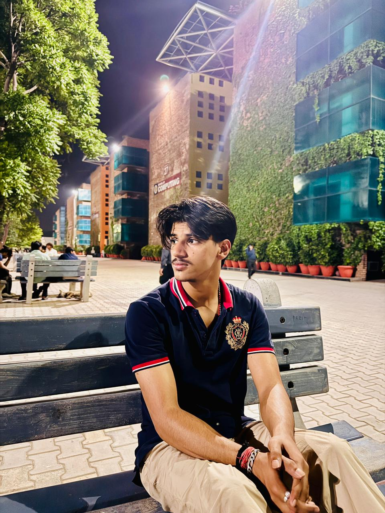

Kumar Abhay Partap Singh
Summary
I'm Kumar Abhay Partap Singh from Himachal Pradesh, District Una, currently pursuing B.Tech CSE from LPU with an engineering minor in Full Stack Development.
My CGPA till date is 7.81. I haven't achieved anything till date.
Power Skills
- Imaginative and empathetic
- Inquisitively solves problem
- Curious and creative
- Friendly , adaptable to work on any team
Skills
- Languages & Tools: C, Python, DBMS, C++, Java, HTML, CSS, PHP, JavaScript, Computer Networking, Tailwind CSS, jQuery, Linux, GitHub
- Others: Problem-solving, Leadership, Agile teamwork, Quick decision-making, Fast learner
- Languages: English, Hindi, Punjabi
- Certification: C++, DSA in C++, C, Java Programming, Bits and Bytes of Computer Networking (Coursera), Hardware and OS Essentials (Coursera), Python, Self Confidence, Computer Communications Specialization, Packet Switching Networks and Algorithm, TCP/IP Advanced Topics, Peer to Peer Protocols and LANs, Fundamentals of Network Communication, Introduction to Hardware and OS
- Awards: Participated in Hack-a-thon and Binary Blitz
UNIVERSITY PROJECTS
- ShopCRM
| HTML,Css,Javascript,ReactJs,MySqli,PHP,TypeScript
-
Developed using ReactJs and Mysqli for backend.
-
Create a customer relationship management system with inventory management,notes profit, sales inventory and tax calculations.
- Online-Quiz
| PHP,Css,HTML
- Using XAMPP we can operate this Online-Quiz.
- In this we can Give test as Student and also Manage Question as Admin
-
You have to first register and then login in it.
- Mental Health Site
| HTML,Css,Javascript
-
Used to prevent mental health illness
-
Basically its Hospital Site clone to check your illness and get remedies
Education
LOVELY PROFESSIONAL UNIVERSITY
Bachelor of Technology, CSE (AI & ML specialization) | Expected May 2027
Major: Computer Science ; Minors: Full Stack, DevOps
Relevant Coursework: Artificial Intelligence, Machine Learning, Data Structures, Algorithms, Operating Systems, Computer
Networking, DBMS, Computer Architecture
Cumulative CGPA: 7.59/10
Senior Secondary (12th Grade) – CGPA: 7.4/10
High School (10th Grade) – CGPA: 8.3/10